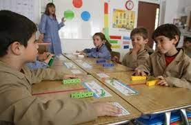
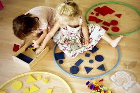
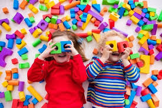

MATEMÁTICA
Ver video del Método Singapur.Aprender a través del juego permite a los niños desarrollar habilidades cognitivas, sociales y emocionales de manera natural y divertida. El juego estimula la creatividad y la imaginación, claves para el desarrollo del pensamiento crítico. Jugando, los niños exploran el mundo que los rodea y construyen nuevos conocimientos. Además, las experiencias lúdicas fomentan la autonomía y fortalecen la toma de decisiones. El juego compartido también enseña valores fundamentales como el respeto, la empatía y el trabajo en equipo.
-MATERIAL DE APOYO PARA DOCENTES- CAPACTITACIONES
MÉTODO SINGAPUR
A cargo de Eleonora Bravo, representante del método en nuestra provincia.
MATEMÁTICA A TRAVÉS DEL JUEGO
A cargo de Pablo Quiroga, coordinador del material didáctico que ofrece el Método Singapur.
APRENDEMOS JUGANDO
Ideas y clases preparadas listas para llevar al aula. A cargo de Juan Lizz.
